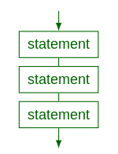
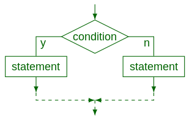
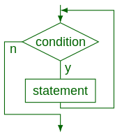
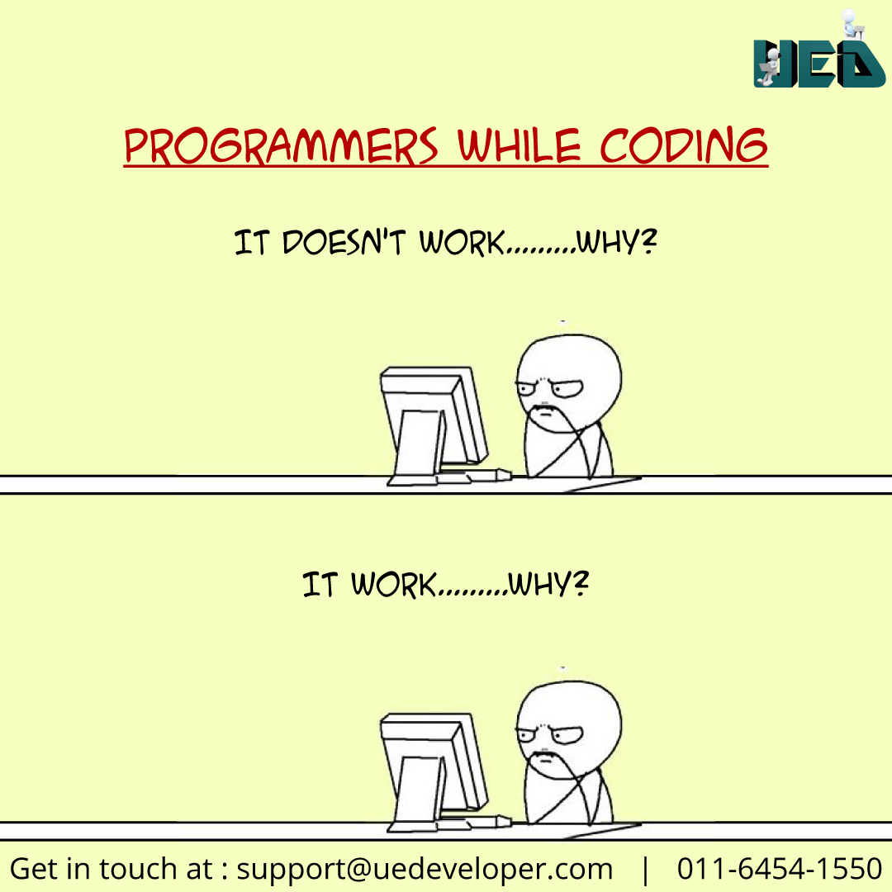
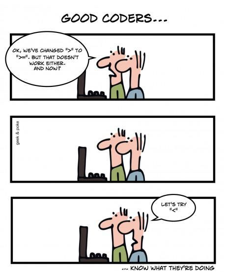
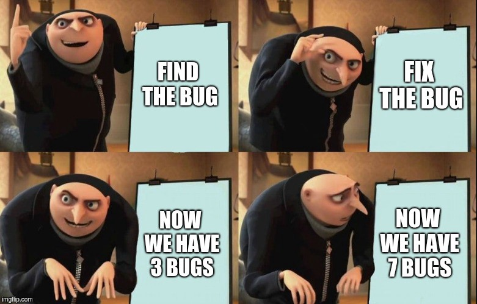
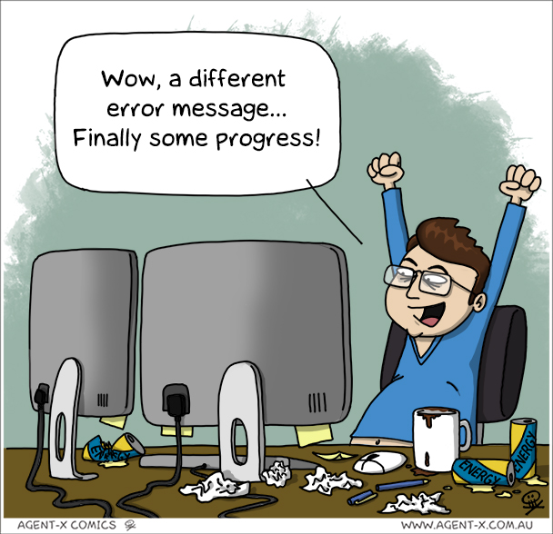
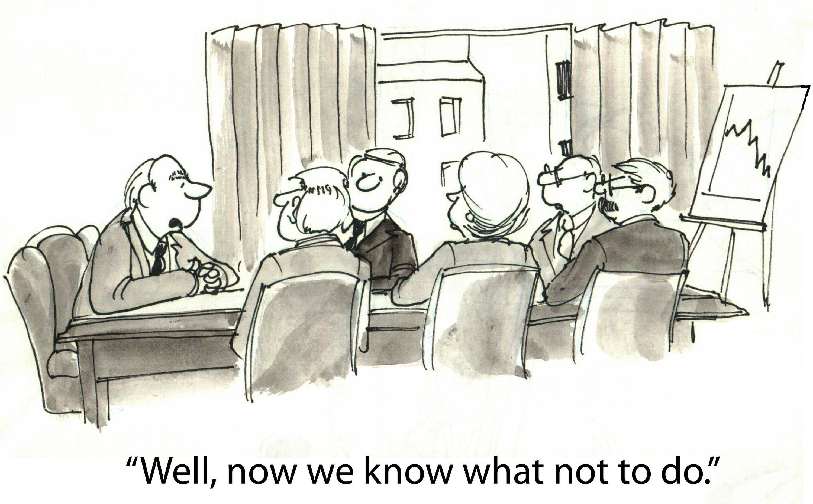
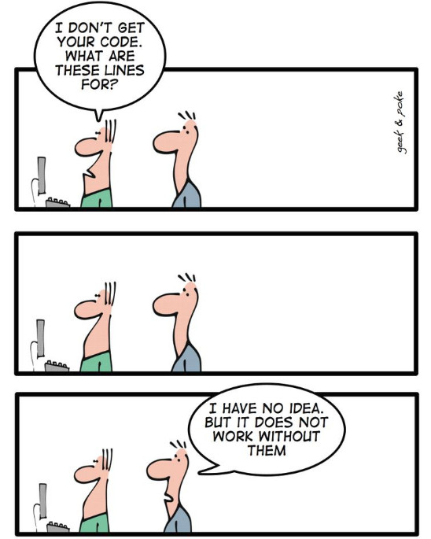

Software Development: Programming and Algorithms
Delivered by: Dr Joseph Aylett-Bullock
def make_order(pizza, customer):
return {"customer": customer,
"items": [pizza],
"total": pizza_price(pizza)}pizza_price returns a number. make_order returns a dictionary.
Now we need to remember which order is ready to collect.
self, inheritance and polymorphism


Sequence | Selection | Iteration
Classes give us another way to organise programs built from these pieces.
State: what an object currently knows.
Behaviour: operations it can perform.
A light has a state. A switch gives us a way to change it.
An order has a status. A method can mark it ready.
Class: Dog — a definition shared by these objects.
Instances: individual dogs, each with its own name and age.
print(type(10))
print(type("alpaca"))
print(type([1, 2, 3]))
queue = [11, 12]
queue.append(13)
print(queue)append is a method on this particular list.
mark_ready() without repeating its implementation.A pricing calculation can still be a function. Choose the organisation that helps.
number, customer, status, mark_ready(), collect()
Vote: which are attributes, and which are methods?
Attributes store number, customer and status.
Methods perform mark_ready() and collect().
Two orders can have different values while supporting the same methods.
class begins a class definition
Order names the new type
Colon + indentation organise the class body
__init__ initialises an instance
self refers to that instance
Parameters receive the supplied values
Attributes store values on the instance
class Order:
def __init__(self, number, customer):
self.number = number
self.customer = customer
self.status = "Preparing"
order_11 = Order(11, "Sam")
order_12 = Order(12, "Alex")
print(order_11.customer, order_12.customer)We supply number and customer. Python supplies the new instance as self.
def still defines a function
mark_ready names the method
self receives the instance
The body changes that instance’s status
Dot + parentheses call its method
class Order:
def __init__(self, number, customer):
self.number = number
self.customer = customer
self.status = "Preparing"
def mark_ready(self):
self.status = "Ready"
order_11 = Order(11, "Sam")
order_12 = Order(12, "Alex")
order_11.mark_ready()
print(order_11.status, order_12.status)Run this example in VS Code. Predict the two statuses first.
Ready Preparing. self refers to order 11 in this call; order 12 is a separate object.
Inside mark_ready, which object does self refer to?
A. The class Order
B. Order 11
C. Order 12
D. Both orders
C. Order 12. For this ordinary instance method, the call can also be written Order.mark_ready(order_12).
Ready. Both names refer to the same object.
Order(13, "Jo") would create a new instance.
Without our own description, printing an object is not very informative.
Add this method inside Order:
Then print(order_11) can show:
Order 11: Readyclass Order:
def __init__(self, number, customer="Guest"):
self.number = number
self.customer = customer
self.status = "Preparing"
order_13 = Order(13)What is order_13.customer?
"Guest". Function parameter rules also apply to methods.
Should a customer collect an order that is still preparing?
def collect(self):
if self.status != "Ready":
raise ValueError("Order is not ready")
self.status = "Collected"order_11.collect() checks the rule before changing the status.
Animal describes shared attributes and behaviour.
Cat and Alpaca can inherit from Animal.
A child class can add or override methods.
A cat is an animal. An order has a customer.
class Animal:
def __init__(self, name):
self.name = name
class Cat(Animal):
def __init__(self, name, breed):
super().__init__(name) # Animal sets self.name
self.breed = breed # Cat adds self.breed
kitty = Cat("Kitty", "Siamese")
print(kitty.name, kitty.breed)Cat.__init__ replaces the inherited initialiser. super().__init__(name) runs the Animal setup before Cat adds breed. Without it, kitty.name would be missing.
Put the definition in orders.py.
Use it from another file:
Testing: compare actual behaviour with what should happen.
Debugging: investigate and fix a known failure.
“It ran” does not tell us whether the answer is correct.

£5 off a basket of £20 or more.
One input: the basket subtotal. One output: the amount to pay.
Use whole pence: £20 is 2000, and £5 is 500.
In pairs, choose one subtotal and write down:
Would you test below £20, exactly £20, or above £20?
| Input subtotal | Expected amount to pay | Why this case? |
|---|---|---|
1900 (£19) |
? | Below the threshold |
2000 (£20) |
? | Exactly on the threshold |
2100 (£21) |
? | Above the threshold |
1900, 1500, 1600 pence respectively.
At exactly £20, the discount applies.
def amount_to_pay(subtotal):
if subtotal > 2000:
return subtotal - 500
return subtotal
for subtotal, expected in [(1900, 1900),
(2000, 1500),
(2100, 1600)]:
actual = amount_to_pay(subtotal)
print(subtotal, expected, actual, actual == expected)Output columns: input · expected · actual · matches?

def amount_to_pay(subtotal):
print("entered:", subtotal)
print("eligible:", subtotal > 2000)
if subtotal > 2000:
print("discount branch")
return subtotal - 500
print("no-discount branch")
return subtotal
print("result:", amount_to_pay(2000))Which message appears? Which message is missing?
subtotal = 2000
print("A: subtotal", subtotal)
total = amount_to_pay(subtotal)
print("B: calculated total", total)
print("C: receipt", total)If A is correct but B is wrong, inspect the calculation between them.
Add more detail inside that block. Keep narrowing the search.
live/till_buggy.py.if subtotal > 2000:.subtotal in Variables; watch subtotal > 2000.At 2000, why is the watch expression False?
Step Into enters a called function. Continue runs to the next breakpoint.
def amount_to_pay(subtotal):
if subtotal >= 2000:
return subtotal - 500
return subtotal
print(amount_to_pay(2000))>= includes the boundary. The result is 1500 pence.

Rerun all the checks, including the ones that already passed.
def amount_to_pay(subtotal):
if subtotal >= 2000:
return subtotal - 500
return subtotal
assert amount_to_pay(1900) == 1900
assert amount_to_pay(2000) == 1500
assert amount_to_pay(2100) == 1600
print("3 tests passed")A regression test checks that a previously fixed failure stays fixed.
Unit test: call amount_to_pay(2000) and check for 1500.
Integration test: check that the checkout passes its subtotal into pricing and uses the returned amount on the receipt.
A correct pricing function is no help if the receipt uses the original subtotal.
| What you observe | Example |
|---|---|
| An obvious failure | A traceback or a program that does not finish |
| A silent wrong result | Charging £20 when the total should be £15 |
A bug may happen every time, or only for certain inputs or circumstances.

ValueError: Order is not readyRead the exception type and message, then locate the relevant line in the traceback.

A customer tries to collect an order that is still preparing.
Should we:
def collect(self):
if self.status != "Ready":
raise ValueError("Order is not ready")
self.status = "Collected"If raise runs, the assignment below it is skipped.
An order still preparing remains Preparing. The failed operation does not mark it collected.
order = Order(11, "Sam")
try:
order.collect()
print("Enjoy your pizza!")
except ValueError as error:
print(error)
print("Next customer")Order is not ready, then Next customer.
The success message is skipped.
A false condition raises AssertionError.
External input or invalid operations: use explicit checks and exceptions.
Internal assumptions and test expectations: assertions can help.
"Toasting forever".import unittest
from till_fixed import amount_to_pay
class TillTests(unittest.TestCase):
def test_exact_threshold(self):
subtotal, expected = 2000, 1500 # Arrange
actual = amount_to_pay(subtotal) # Act
self.assertEqual(actual, expected) # AssertA unit test checks one behaviour against a result specified in advance.
From the folder containing live/:
cd live
python3 -m unittest discover -s . -v
python3 -m unittest test_till.TillTests.test_exact_threshold -vFAIL means an assertion disagreed with the result. With the buggy till, 2000 != 1500.
ERROR means an unexpected exception interrupted the test.
import unittest
from orders import Order
class OrderTests(unittest.TestCase):
def test_failed_collection_preserves_state(self):
order = Order(11, "Sam")
with self.assertRaises(ValueError):
order.collect()
self.assertEqual(order.status, "Preparing")The test checks both the rejected action and the unchanged order. The earlier £19/£20/£21 cases test the other important boundary.
Order and order_11?self refer to in order_12.mark_ready()?2000 a useful test input for the till?Class / instance · Order 12 · Boundary · Values and control flow · No

class Order:
def __init__(self, number, customer="Guest"):
self.number = number
self.customer = customer
self.status = "Preparing"
def mark_ready(self):
self.status = "Ready"
def collect(self):
if self.status != "Ready":
raise ValueError("Order is not ready")
self.status = "Collected"
def __str__(self):
return "Order " + str(self.number) + ": " + self.statustry:
value = int("12")
except ValueError:
print("Please enter a whole number")
else:
print("Converted:", value)
finally:
print("Finished this attempt")except handles a matching exception from the try block.else runs if that block completes without an exception.finally runs on the way out, whether or not an exception occurred.File in live/ |
Purpose |
|---|---|
orders.py, counter.py, two_orders.py |
Order class, importing it and the IDE demonstration |
animals.py |
Inheritance, super() and overriding |
till_buggy.py, till_prints.py |
Same boundary bug, with and without prints |
checkpoints.py |
Prints before and after a calculation |
till_fixed.py, test_till.py |
Fixed function and automated tests |
exceptions_demo.py, test_orders.py |
Handling an invalid operation; instance tests |
refactoring.py |
Same checks before and after restructuring |
Open week5.code-workspace for the prepared VS Code debug configuration.
Session_4D_Testunits.pdf), pages 2–6Original humour and graphics are retained from the supplied decks. Asset sources are recorded in assets/SOURCES.md and speaker notes.
bristol.ac.uk